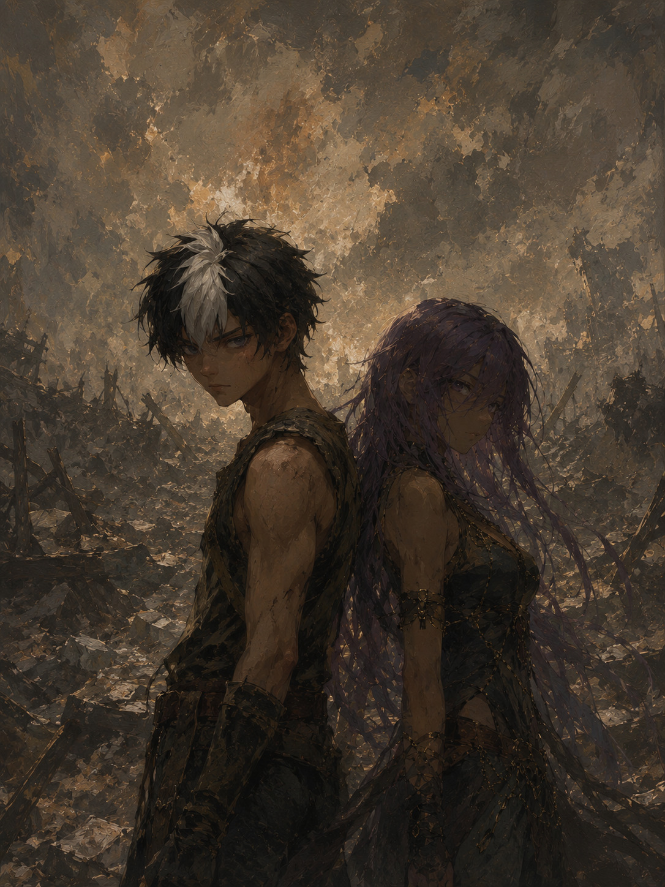

?admin=roman à la fin de l'adresse du site. Un visiteur normal ne verra jamais ce bouton ni ce panneau — il ne verra que la page d'accueil et les chapitres, en lecture seule.
1Ouvrez le fichier .html du site avec un éditeur de texte (Bloc-notes, TextEdit, Notepad++, ou VS Code).
2Cherchez cette ligne (Ctrl+F / Cmd+F pour chercher title-main) :
<h1 class="title-main">Titre du roman</h1>3Remplacez Titre du roman par le titre que vous voulez. Enregistrez le fichier.
1Cherchez ce bloc (Ctrl+F / Cmd+F pour chercher cover-placeholder) :
<div class="cover-placeholder">Emplacement de la couverture</div>2Remplacez-le entièrement par :
<img class="cover-img" src="NOM-DE-VOTRE-IMAGE.jpg" alt="">3Placez votre fichier image (jpg ou png) dans le même dossier que le fichier .html, avec exactement le même nom que celui écrit dans src="...". Si vous hébergez sur GitHub ou Netlify, uploadez l'image en même temps que le fichier HTML.
1Dans le fichier .html, cherchez const CHAPTERS = [.
2Juste avant le crochet fermant ] qui termine ce tableau, ajoutez une virgule après le dernier chapitre existant, puis collez un nouveau bloc dans ce format :
{
title: "Prélude IV",
body: `Premier paragraphe du chapitre.
Deuxième paragraphe, séparé du premier
par une ligne vide.
---
Un paragraphe après une coupure de scène
(les trois tirets créent un séparateur ◆).
« Un dialogue avec des guillemets français. »
*Un mot ou une phrase en italique.*`
}3Enregistrez le fichier. Le nouveau chapitre apparaîtra automatiquement dans la liste, dans l'ordre où vous l'avez ajouté — pas besoin de conversion, le site s'occupe de tout.
Après chaque modification du fichier, vous devez re-déposer la nouvelle version sur votre hébergeur pour que les visiteurs voient les changements :
•Netlify : retournez sur app.netlify.com, ouvrez votre site, et glissez-déposez le nouveau fichier pour remplacer l'ancien.
•GitHub Pages : uploadez le fichier modifié dans votre repository (il remplacera l'ancien), le site se met à jour automatiquement en quelques minutes.